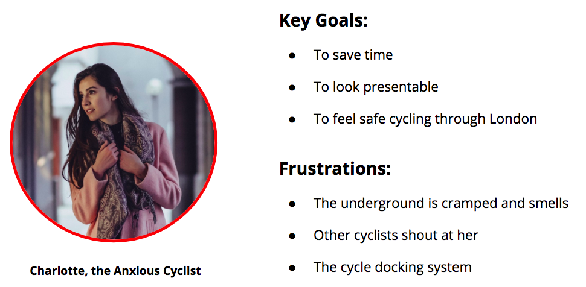
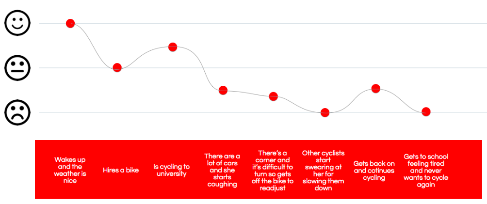

Cyclable
Concept Project - General Assembly - 2018

Santander Cycles - A concept project at General Assembly, London 2018.
Transport for London wants to find a way to encourage people who are still unsure about cycling in London to use the Santander Cycles scheme using an app.
People who were unsure about cycling in London were concerned with safety on London’s roads and it was difficult to produce ideas that could be prototyped within the scope of the project.
We came up with the idea to make a educational game that would help people to learn about how to cycle on London’s roads, whilst incentivising them with free Santander rides.
This app would reduce the barrier to entry for users to try cycling, whilst helping them to feel safer.
2 weeks
Four UX Designers, myself included.
UX Designer – Group project. My responsibilities included Client research|Site Visit | Competitor analysis | Assumptions matrix | Survey | User interviews|Affinity mapping | User persona | Empathy mapping | Scenarios | Experience mapping | HMW statement | Design studio| Feature prioritisation | User flows | Wire-flows| Sketching | Prototyping | User testing | Iterating | Design of presentation slide templates
Pen and paper | Google Forms | Marvel | Sketch | Trello Kanban board | Google Drive
The Brief
Encouraging people to cycle is one of the key components of Mayor Sadiq Khan’s plan to help Londoners lead healthier and more active lives. Transport of London want to find a way to encourage people who are still unsure about cycling in the city to use the Santander Cycles scheme.
Surveys
We sent out a survey online that asked people about their travel behaviour in London. Through this method, we were able to filter and recruit research participants. We tried to recruit two groups of interviewees; we wanted to talk to frequent London cyclists to understand why and how they started cycling, and also talked to people who did not cycle in London.
User Interview
During the interviews, we asked individuals in more depth about their London travel behaviour in more depth. We wanted to understand how they travelled and the reason behind their behavour. Further to this, they were also specifically asked about their attitude and feelings towards cycling in London.
Through user interviews we discovered many problem areas but one problem stood out for both cyclists and non-cyclists: Safety. This was prominent especially amongst interviewees who had never tried to cycle on London’s roads. They knew how to ride bikes but they had never been taught to cycle on roads.
Site Visit
We used the Santander bikes ourselves to ride around London.
Site visit photo of all of us looking terrible
Key quotes from user interviews
Affinity mapping to distil findings from user interview
Main User Persona
User Journey
Design Studios
First design studio
Second design studio
We decided to create an educational gaming app that teaches individuals how to cycle safely on London’s roads. In a busy city like London, the users wanted to be certain that they were prepared before challenging themselves and their safety. Additionally, the users didn’t want to commit a lot of time to learn as they didn’t know if they would continue to cycle. So we wanted to provide an easy way for our users to learn.
In addition to teaching safety, the app incentivises the users by rewarding them with free Santander Cycle rides when completing levels. By reducing the barrier to entry, the users would be encouraged to cycle on the road for the first time.
Feature prioritisation
Initial User and Screen Flows
Final User Flow
Iterations
Map iterations
In-game iterations
Reward screen iterations
Delivery
Click here to see the clickable mid-fi prototype
High-fidelity screens
Results
The project addressed the brief's main problem of encouraging people who do not cycle by lowering the barrier to entry, whilst also helping individuals to feel safe on London's roads.
Next steps:
- Work on game interactivity
- Research effect of free rides with users
- Consider integrate the game with Santander’s existing app